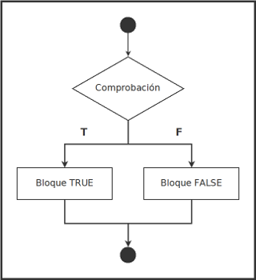
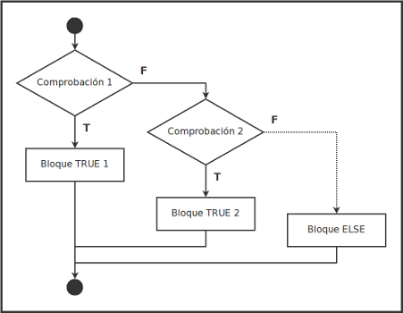
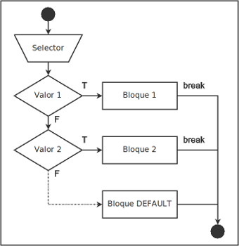

Condicionales
Los condicionales son expresiones que en el caso de que se cumpla una condición, o no, ejecutan un bloque de código.
Los tipos de sentencias condicionales son:
ifif elseif else ifswitch case
if
En la sentencia condicional if, si se cumple una condición, se ejecuta un bloque de código, si no, no se ejecuta.
La sintaxis y el flujo de trabajo sería:
ìf (comprobacion) {
// Bloque TRUE
}

Veamos con un ejemplo:
int x = 5;
if (x == 5) {
// si X equivale a 5 se ejecuta este bloque
printf("X es igual a 5");
}
if else
Al condicional if podemos añadirle else para ejecutar un bloque en el caso de que no se cumpla la condición.
La sintaxis y el flujo de trabajo sería:
ìf (comprobacion) {
// Bloque TRUE
} else {
// Bloque FALSE
}

Ejemplo:
int x = 8;
if (x == 5) {
// si X equivale a 5 se ejecuta este bloque
printf("X es igual a 5");
} else {
// si no, se ejecuta este otro
printf("X no es igual a 5");
}
if else if
Al condicional if else podemos añadirle la expresión else if para ejecutar un bloque en el caso de que querramos añadir más condiciones cuando no se cumpla la inicial.
La sintaxis y el flujo de trabajo sería:
ìf (comprobacion 1) {
// Bloque TRUE 1
} else if (comprobacion 2) {
// Bloque TRUE 2
} else {
// Bloque ELSE
}

Ejemplo:
int x = 10;
if (x == 5) {
// si X equivale a 5 se ejecuta este bloque
printf("X es igual a 5");
} else if (x > 5) {
// si X no es 5, se comprueba si es mayor a 5 y se ejecuta este bloque si fuese
printf("X es mayor a 5");
} else if (x < 5) {
// si X no es igual o mayor 5, se comprueba si es menor a 5 y se ejecuta este bloque si fuese
printf("X es menor a 5");
} else {
// si no se cumpliera ninguno de los casos
printf("¿Existe X?");
}
switch case
El condicional switch case es una alternativa a if else if en la que se recoge un dato en una variable (la llamaremos selector) y dependiendo de su valor se ejecuta un bloque de código entre varias opciones.
La sintaxis y el flujo de trabajo es:
switch(selector) {
case valor1;
// Bloque 1
break;
case valor2;
// Bloque 2
break;
default:
// Bloque DEFAULT
}

Veamos como ejemplo un uso típico del condicional switch case, un menú de aplicación que da a elegir entre varias opciones y, dependiendo de lo que se seleccione, ejecutará un bloque de código u otro:
int selector;
printf(
"Menú de aplicación:\n"
"1. Mostrar X.\n"
"2. Mostrar Y.\n"
"3. Mostrar Z.\n"
"Escoja opción: "
);
scanf("%i", %selector);
switch (selector) {
case 1:
printf("X es ...");
break;
case 2:
printf("Y es ...");
break;
case 3:
printf("Z es ...");
break;
default:
printf("Opción erronea");
}
Es necesario el uso de la expresión break por cada case para indicar que no se continue ejecutando de manera secuencial el resto del bloque switch.
El caso default será el que se ejecutará cuando el usuario haya introducido un dato que no coincida con los establecidos.
IMPORTANTE: Por lo general, es utilizado
switch casepor ser una opción sintácticamente más limpia y fácil de leer queif else ifpero tiene la desventaja de que sólo sirve para valores concretos. Por ejemplo, no podría plantear el casox > 5.